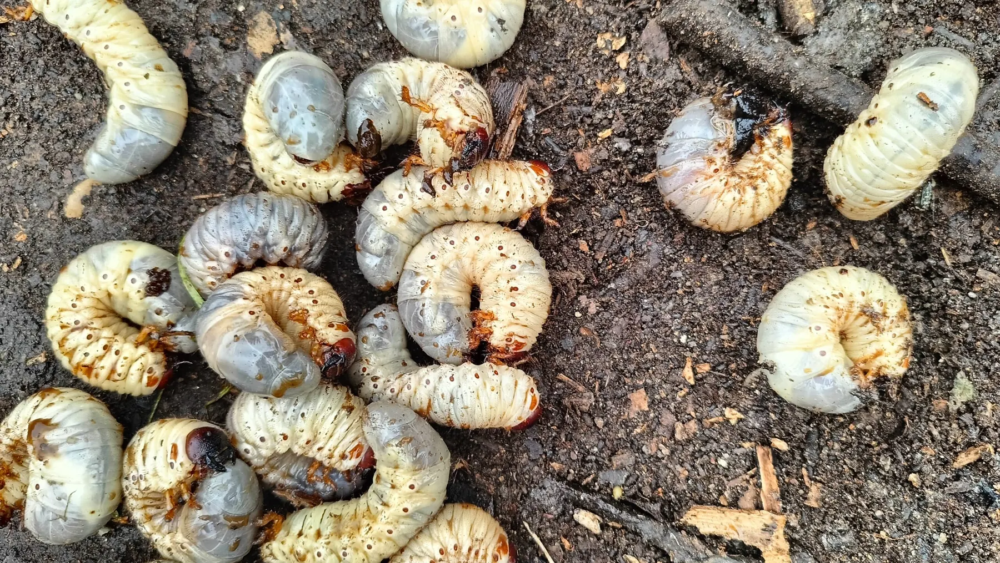

Most lawn pest damage in New Orleans comes from chinch bugs, fall armyworms, sod webworms, white grubs, or mole crickets. The fastest way to tell insects from drought is whether watering fixes it: insect damage keeps spreading after a thorough soaking. Where the damage sits, on the blades or at the roots, narrows it further, and the pest determines the treatment window.
At Big Easy Lawn Care, the most common mistake we see is a homeowner watering a pest problem for weeks. The lawn keeps declining, the water bill climbs, and the actual cause spreads the whole time.
Our climate gives insects a long active season, and mild winters do little to reduce their numbers. That combination means pest pressure here is a normal part of lawn care rather than an unusual event.
This guide covers how to separate insect damage from everything else, which pests are actually common here, and what our conditions do to make it worse. Contact us today to have a declining patch identified properly.
How Do You Tell Insect Damage From Everything Else?
Three quick observations separate insect damage from drought, wear, and other causes. None of them requires equipment.
The Pattern of the Damage
Drought stress fades in gradually and tracks sun exposure and slope. Insect damage tends to start as a defined patch and expand outward from it, often with a visible edge between damaged and healthy turf.
An expanding edge is the most useful single clue. Damage that grows week over week while conditions stay the same is biological, not environmental.
Whether Water Fixes It
Water a suspect area thoroughly and give it several days. Heat and drought stress respond; insect damage does not, and often looks worse because the pests keep feeding.
This test costs nothing and rules out the most common false alarm. If the patch keeps expanding after a good soaking, more water will not fix it, so have it looked at.
Water deeply once rather than lightly each day, then leave the area alone long enough to respond.
What You Find at the Soil Line
Part the grass at the edge of a damaged patch and look at the soil surface and the base of the blades. Blade-feeding insects leave chewed or notched edges and are often visible in the thatch.
For root feeders, tug the turf. Grass that pulls up easily has lost its root anchorage, which points to a problem below the surface rather than above it.
Check a few spots along the same edge, since one sample can mislead.
Insects That Feed on the Blades
These pests damage the visible part of the plant, so symptoms appear quickly. They are also the ones most often mistaken for drought.
Chinch Bugs: Drought-Look Damage in Full Sun
Chinch bugs are the most consistent St. Augustine pest in this region, and they favor hot, dry, sunny stretches of lawn. The damage looks so much like drought stress that most homeowners water it for weeks first.
The tell is location and response. Chinch damage concentrates in the sunniest, driest parts of the lawn and does not improve with watering, unlike genuine drought stress in the same conditions.
Part the grass at the edge of a suspect patch on a hot afternoon and look at the soil surface.
Fall Armyworms: Rapid Stripping in Late Season
Fall armyworm larvae feed in large groups and can strip a substantial area in a very short time, often appearing in late summer and fall. Homeowners frequently describe a lawn that looked fine over the weekend and ragged by midweek.
Look for the larvae themselves in early morning or evening, and watch for unusual bird activity concentrated on one part of the lawn. Speed matters more with this pest than with any other on the list.
Damage advances in a wave, since the larvae move as a group, and catching that front early is what separates a damaged patch from bare soil.
Sod Webworms: Notched Blades and Night Feeding
Sod webworm larvae feed at night and hide in the thatch during the day, so the insect is rarely visible when you go looking. What you see instead is grass blades chewed unevenly along the edges.
The adult moths give it away. Small tan moths flying up in front of you as you cross the lawn are a reliable sign that larvae are present below.
Thatch is what to watch, since it gives the larvae somewhere to sit out the day. That layer builds from stems and runners rather than clippings, so routine lawn cutting keeps growth from outrunning the mower.
Insects That Feed Below the Surface
Root and soil-level pests do their damage out of sight, so the lawn often looks fine until it does not. Diagnosis relies on how the turf behaves rather than on what you can see.
White Grubs: Turf That Lifts Like Carpet
White grubs are beetle larvae that feed on grass roots, producing irregular areas of browning that spread without a clear pattern. The definitive test is grip: damaged turf lifts away from the soil with almost no resistance because the roots holding it are gone.
Secondary signs often arrive first. Animals digging in the lawn are usually after the grubs rather than the grass itself.
Damage shows first where the lawn dries fastest, because a reduced root system draws less moisture, which is why early grub damage gets mistaken for a watering problem.
Mole Crickets: Spongy Ground and Surface Tunnels
Mole crickets tunnel just below the surface, disturbing roots and leaving the ground feeling soft or spongy underfoot. You may see raised, irregular trails across the soil, especially after rain brings the crickets closer to the surface.
The damage combines feeding with mechanical disruption, so the grass is being both eaten and uprooted. Turf in affected areas tends to thin and weaken before it browns, and the surface often feels broken up underfoot.
Walking the lawn after a rain is the simplest way to find the trails while they are fresh.
Fire Ants: Mounds and a Usability Problem
Fire ants are widespread across Louisiana and are less a turf pest than a usability and safety issue. The mounds themselves build up on the turf surface and interfere with mowing.
Their real cost is that they make parts of the yard unusable, particularly for children and pets. Treatment differs from turf-feeding insects, so identify the mound before treating the lawn.
Mounds reappear in the same area, so watching those sections across a season beats reacting mound by mound.
Why Lawn Pests Hit New Orleans Lawns Harder
Local conditions extend the active season and reduce the natural checks that cold climates get for free.
| Local Factor | Effect on Pest Pressure | What Helps |
|---|---|---|
| Mild winters | Populations carry over instead of being knocked back by a hard freeze | Scouting through the shoulder seasons rather than only in summer |
| Long hot season | More generations per year and a longer window for damage | Regular inspection during hot dry stretches, when chinch bugs peak |
| St. Augustine as a leading lawn grass | One of the region’s two most popular lawn grasses is also the preferred chinch bug host | Watching sunny, dry sections first when a patch starts declining |
| Heavy thatch from vigorous growth | Gives blade-feeding larvae somewhere to shelter during the day | Consistent mowing so growth does not outrun the schedule |
Protect Your New Orleans Lawn Before the Damage Spreads
The difference between a patch and a lawn replacement is usually a few weeks of correct identification. Watering an insect problem delays treatment while the population grows.
At Big Easy Lawn Care, we identify what is actually causing a declining patch and keep mowing and trimming consistent so thatch does not become shelter. Call us today to have a problem area properly diagnosed.
Frequently Asked Questions
How do I know if my lawn has bugs or is just dry?
Water the area thoroughly and wait several days. Drought stress improves; insect damage keeps spreading and often looks worse because feeding continues. Insect damage also tends to expand from a defined edge rather than fading in gradually the way drought does across sun-exposed areas.
What are the most common lawn pests in New Orleans?
Chinch bugs, fall armyworms, sod webworms, white grubs, and mole crickets account for most turf insect damage in the area, with fire ants a separate usability problem. Chinch bugs are the most consistent issue because St. Augustine, one of the region’s two most popular lawn grasses, is their preferred host.
What does chinch bug damage look like?
It looks remarkably like drought stress, which is why it is so often missed. Damage concentrates in the hottest, driest, sunniest parts of the lawn and spreads outward from there. The distinguishing feature is that thorough watering does not improve it, while genuine drought stress in the same spot would.
How fast can armyworms destroy a lawn?
Very fast. Fall armyworm larvae feed in large groups and can strip a substantial area within days, which is why homeowners often describe a lawn that looked fine over the weekend and ragged by midweek. Late summer and fall are the typical window, and early detection matters more than with any other common pest.
Why is my grass lifting up like a carpet?
That is the classic sign of root-feeding grubs. Beetle larvae eat the roots that anchor the turf, so the sod separates from the soil with almost no resistance. Animals digging in the lawn frequently show up before the turf starts lifting, since they are after the grubs rather than the grass.
Do mole crickets damage lawns in Louisiana?
Yes. Mole crickets tunnel just below the surface, which both disturbs roots and leaves the ground feeling soft or spongy underfoot. You may also notice raised, irregular surface trails after rain, and affected turf tends to thin and weaken before it browns.
Should I treat my whole lawn or just the damaged patch?
That depends on the pest and how far it has spread, which is why identification comes first. Treating the wrong pest or the wrong area wastes the application and the season. Have the problem identified before choosing a treatment approach, and follow all label directions on any product used.
Can regular mowing help prevent lawn pests?
It helps indirectly. Thatch is where blade-feeding larvae shelter during the day, and that layer builds from stems and runners when growth outpaces the mowing schedule. Regular mowing also means someone is looking at the lawn often enough to catch an expanding patch while it is still small.